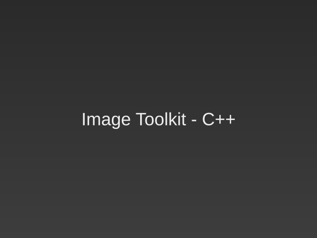
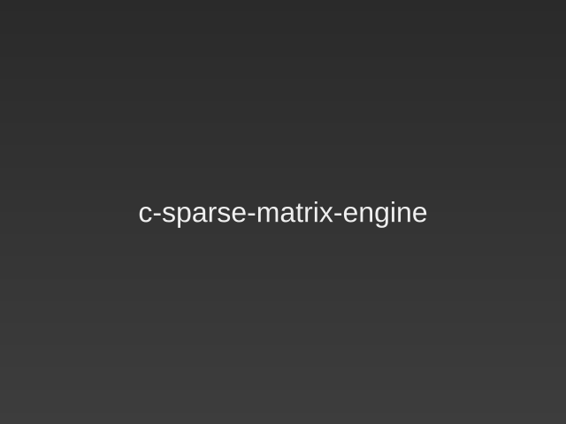

Caves of Chaos - Java RPG Game
A roguelike role-playing game developed in Java for an Object Oriented Programming class, featuring dungeon exploration and game mechanics with animated sprites!
I'm an M.Sc. student in Electronics–Radioelectrology and Control & Computing at the National and Kapodistrian University of Athens, with a B.Sc. in Physics. My interests lie in AI, embedded systems, and mathematics. I'm passionate about applying AI and machine learning to solve practical challenges and turning innovative ideas into real-world solutions. My expertise includes computer vision, time-series forecasting, hardware-software co-design, and embedded systems development.
Programming Languages: C, C++, Python, Java, Bash/Shell scripting, Assembly, CUDA, Kotlin
Parallel Programming: pthreads, OpenMP, MPI
Software Engineering: OOP, Data structures & algorithms, Testing/debugging, Version control (Git)
AI & Data Science: Computer vision, time-series forecasting, optimization, quantization, Hardware-aware deployment
Frameworks & Tools: PyTorch, TensorFlow, Keras, scikit-learn, Pandas, MySQL
Embedded Systems: VHDL, Hardware–software co-design, ARM architecture
Mathematics: Calculus, linear algebra, probability, optimization, numerical methods
Languages: Greek (Native), English (C2 – ECPE, University of Michigan), Japanese (N5, currently learning)
Soft Skills: Leadership, Problem-solving, Collaboration, Adaptability, Presentations
M.Sc. in Electronics–Radioelectrology and Control & Computing
National and Kapodistrian University of Athens (NKUA)
Dept. of Physics & Dept. of Informatics and Telecommunications
Oct 2024 - Jun 2026
GPA: 9.83/10
Dissertation: Radial Basis Function - based Kolmogorov-Arnold Networks: A Comprehensive Study
B.Sc. in Physics
National and Kapodistrian University of Athens (NKUA)
Dept. of Physics
Oct 2020 - Jul 2024
GPA: 7.89/10
Dissertation: Short-Term Prediction of Global Horizontal Irradiance from Sky Images Using CNNs
Here you can find the projects I have been working on. You can use the buttons below to filter the projects by category. Click on each project to see more details and access the code on GitHub! In the featured section you can find projects that I consider to be the most significant and representative of my skills and interests, while the other categories include additional projects that showcase a wider range of my work.
A roguelike role-playing game developed in Java for an Object Oriented Programming class, featuring dungeon exploration and game mechanics with animated sprites!

Implementation of Radial Basis Function Kolmogorov-Arnold Networks, part of a hardware-accelerated KAN FPGA project for efficient neural computation.

Complete System-on-Chip design for accelerating Sobel edge detection using Xilinx Vivado. Hardware-software co-design for computer vision acceleration.

Implementation of a subset of ARM instruction set architecture in a multicycle microarchitecture using Xilinx Vivado, exploring processor design principles.

Final project for Deep Neural Networks course exploring machine learning approaches for time-series financial data prediction and analysis.

Comprehensive exploration of parallel programming in C using Pthreads, OpenMP and MPI, investigating concurrent programming patterns and performance optimization.

A C++17 image processing toolkit with command-line automation and image I/O. It includes convolution filters, max pooling, kernel based filters, flexible output handling, and unit-tested components built with CMake.

With this engine a 2D sparse matrix data structure is implemented with graph traversal capabilities using Breadth First Search (BFS) while also detecting cycles in the BFS tree. Basic operations for nodes include create, insert, delete.
I'm always open to new opportunities, collaborations, or just a friendly chat. Feel free to reach out through the contact form below or connect with me on my LinkedIn. I'll get back to you as soon as possible!